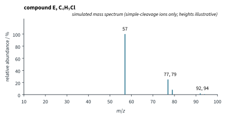
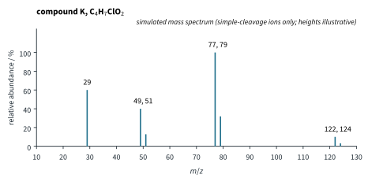

Mass Spectrometry and Structure Solving 2 Tutorial
Chapter H3.4 · Mass Spectrometry and Structure Solving Tutorial 2
On this page
Use the Data Booklet tables of characteristic infra-red absorptions and of typical proton (1H) chemical shift values, and the Periodic Table. Isotope abundances are as in Tutorial 1 (literature values). Mass spectra are simulated (simple-cleavage ions only; heights illustrative); NMR data are in CDCl3 at 400 MHz (literature values). Marks are shown in square brackets.
Question 1
Calculate the degree of unsaturation for each formula, and give one structural feature that a molecule with that formula could have.
- C6H6 [1]
- C4H6 [1]
- C3H5Cl [1]
- C5H5N [1]
- C7H6O2 [1]
- Which of these formulae could belong to a compound containing a benzene ring? Explain. [1]
Question 2
Compound Q contains C 58.8 %, H 9.8 % and O 31.4 % by mass. Its mass spectrum has a molecular ion peak at m/z 102 (height 10.0) and an M+1 peak at m/z 103 (height 0.56).
- Calculate the empirical formula of Q. [2]
- Find the molecular formula of Q, and show that the M+1 peak agrees with it. [2]
- Calculate the degree of unsaturation of Q, and state what it tells you about the structure. [2]
Question 3
Compound E, C4H9Cl, gives the simulated mass spectrum in Fig 1. Its 1H NMR spectrum has a single signal, at δ 1.62 (singlet, 9H).

- Deduce the structure of E and draw it. Explain how the NMR signal and the ions at m/z 77, 79 and 57 support your answer. [5]
- In its simulated mass spectrum, the isomer 1-chlorobutane, CH3CH2CH2CH2Cl, gives a base peak at m/z 43 and peaks at m/z 49 and 51. Identify these ions, and describe how its 1H NMR spectrum would differ from that of E. [3]
Question 4
Compound Q of Question 2 gives these data. IR: strong absorptions at 1740 and 1200 cm−1; no absorption between 2500 and 3600 cm−1 apart from C–H. 1H NMR: δ 3.67 (singlet, 3H), 2.56 (septet, 1H), 1.17 (doublet, 6H). Mass spectrum: m/z 102, 71, 59 and 43 (base peak).
- Deduce the structure of Q, explaining how each piece of IR and NMR data supports it. [4]
- Identify the ions at m/z 71, 59 and 43. [3]
- Ethyl propanoate, CH3CH2COOCH2CH3, is an isomer of Q. Predict the number of signals in its 1H NMR spectrum and the m/z of the base peak of its mass spectrum. [2]
Question 5
Two isomers of C7H7Br, (bromomethyl)benzene and 1-bromo-4-methylbenzene, both give peaks at m/z 170 and 172 (1 : 1) and a base peak at m/z 91 in their simulated mass spectra.
- Explain why these features of the mass spectra cannot distinguish the two isomers. [2]
- Calculate the degree of unsaturation of C7H7Br and explain what it shows. [1]
- Draw both isomers. One isomer gives 1H NMR signals at δ 7.33 (multiplet, 5H) and 4.50 (singlet, 2H); the other at δ 7.37 (doublet, 2H), 7.04 (doublet, 2H) and 2.30 (singlet, 3H). Assign each set of data to an isomer, explaining each signal. [4]
Question 6
Compound G, C4H10O, gives these data. IR: no broad absorption between 3200 and 3600 cm−1; strong absorption at 1120 cm−1. 1H NMR: δ 3.48 (quartet, 4H) and 1.21 (triplet, 6H); the spectrum does not change when the sample is shaken with D2O. Mass spectrum: m/z 74, 59 and 29 (base peak).
- Deduce the structure of G. [3]
- Identify the ions at m/z 59 and 29, and the radical lost in forming each. [2]
- Describe how the IR spectrum, the D2O test and the base peak of the isomer butan-1-ol would differ from those of G. [3]
Question 7
Compound J, C3H5N, gives these data. IR: a weak absorption at 2250 cm−1. 1H NMR: δ 2.36 (quartet, 2H), 1.30 (triplet, 3H). Mass spectrum: m/z 55, 54 (base peak) and 29.
- Calculate the degree of unsaturation of J. [1]
- Deduce the structure of J, explaining the IR and NMR data. [3]
- Identify the ions at m/z 54 and 29. [2]
- Further example: explain why a compound with one nitrogen atom, such as J, has an odd Mr. [1]
Question 8
An unknown ketone of formula C9H10O is either 1-phenylpropan-1-one, C6H5COCH2CH3, or 1-phenylpropan-2-one, C6H5CH2COCH3. Its data are: UV/vis, a strong absorption near 242 nm; mass spectrum, m/z 134, 105 (base peak), 77 and 29; 1H NMR, δ 7.4–8.0 (multiplet, 5H), 2.99 (quartet, 2H) and 1.23 (triplet, 3H); IR, a strong absorption at 1685 cm−1.
- Draw both candidates. Identify the unknown, and explain how the UV/vis, mass spectrum and NMR data each support your answer. [5]
- Predict, for the other candidate, the m/z of the base peak, the 1H NMR signals (δ ranges, areas and multiplicities) and the appearance of its UV/vis spectrum. [4]
Question 9
Read the passage and answer the questions that follow.
- Explain why the impurity must be identified. [1]
- Use the mass spectra to suggest the molecular formula and identity of the impurity, and give one way in which it could be present in the product. [3]
- Describe the IR and 1H NMR evidence that would confirm your answer to (b). [2]
- Describe how the identity of the impurity would finally be confirmed. [2]
Question 10
Compound K, C4H7ClO2, gives the simulated mass spectrum in Fig 2 and these data. IR: strong absorptions at 1750 and 1200 cm−1 and at 780 cm−1; no O–H absorption. 1H NMR: δ 4.24 (quartet, 2H), 4.06 (singlet, 2H), 1.31 (triplet, 3H).

- Deduce the structure of K and draw it, using the formula, the IR and NMR data and the peaks at m/z 122 and 124. [4]
- Identify the ions at m/z 77, 79 and at m/z 49, 51. [2]
- Explain why the signal at δ 4.06 is a singlet, and why its δ is so high. [2]
- Its isomer methyl 3-chloropropanoate, ClCH2CH2COOCH3, gives NMR signals at δ 3.76 (triplet, 2H), 3.72 (singlet, 3H) and 2.80 (triplet, 2H), and a base peak at m/z 91 and 93 (3 : 1). Explain how the data rule it out for K, and why its peak at m/z 91 cannot be a benzyl ion. [2]